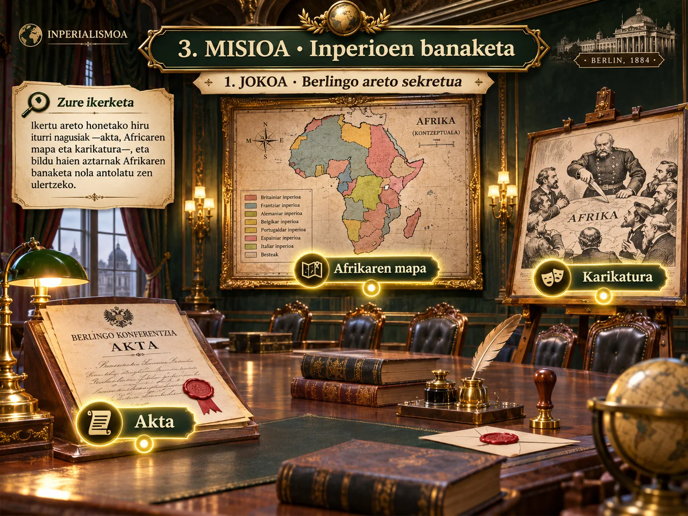

Irakaslearen aurrebista · Ez da taldearen aurrerapena gordeko.
Aretoaren jatorrizko irudia falta da. Aukeratu irudia aurrebista egiteko.

Irakaslearen aurrebista · Ez da taldearen aurrerapena gordeko.
Aretoaren jatorrizko irudia falta da. Aukeratu irudia aurrebista egiteko.
Saioa egiaztatzen…